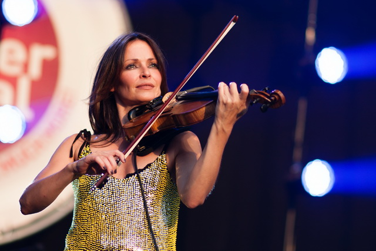
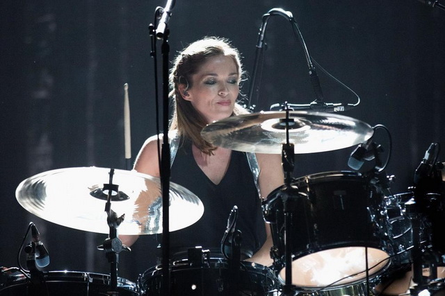
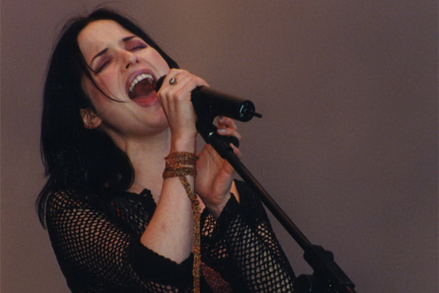
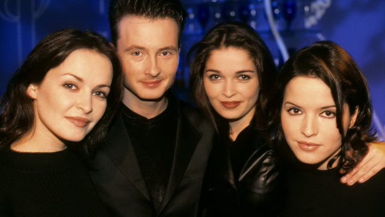
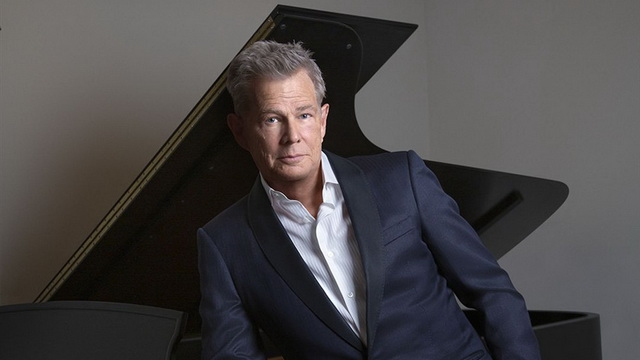
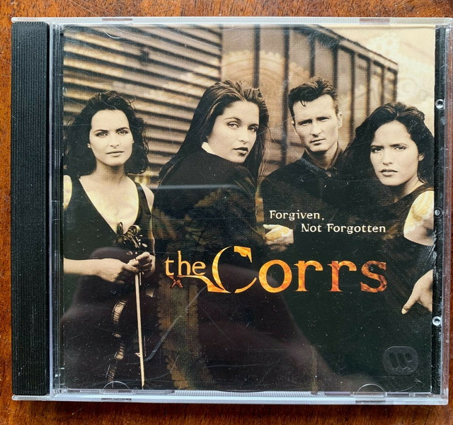
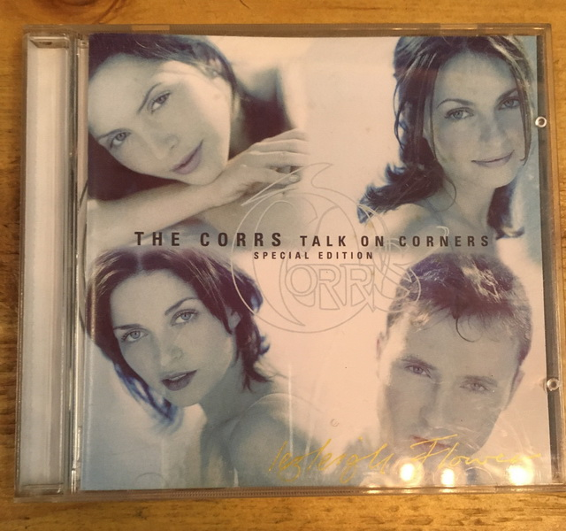
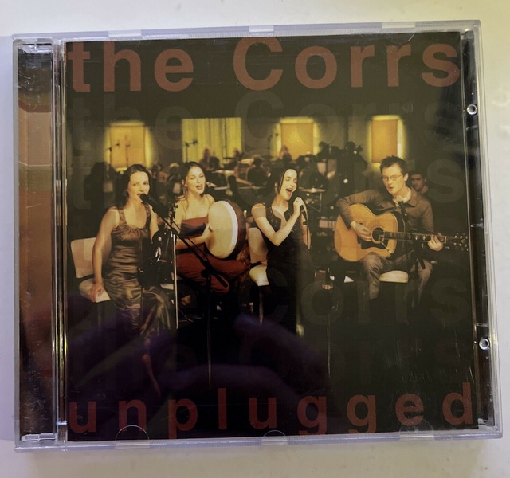
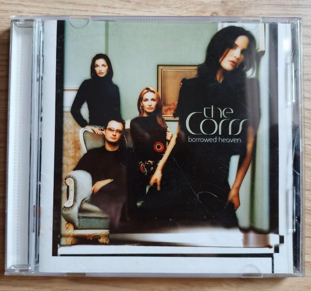

The Corrs , Keluarga Musisi "Komplet" dari Irlandia.
Buah memang jatuh tak jauh dari pohonnya. Demikian pula pada keluarga The Corrs, sebuah band beraliran folk rock asal Dundalk, Irlandia.Keempat personilnya adalah saudara sekandung yang terdiri dari Jim, Sharon, Caroline dan Andrea.
Lahir dari orang tua yang keduanya musisi, darah musik mengalir deras ke dalam tubuh anak-anak mereka.
1. Jim Corr

Jim Corr (31 July 1964) "What's the definition of a gentleman? A guy who can play the accordion, but doesn't"
Pemain keyboard, gitar akustik dan elektrik, akordion dan piano ini merupakan anak tertua sekaligus laki-laki satu-satunya.
Konon dia disebut sebagai tulang punggung band ini. Tak hanya bermain musik dan mencipta lagu, dia juga terlibat dalam produksi, mixing sekaligus juga editing. The Corrs tak pernah akan menjadi The Corrs tanpa "lelaki" di dalam grupnya..
2. Sharon Corr

Sharon Corr (24 March 1970) "There was a local priest in our town that was teaching the violin. I was seven when I had my first lesson. I only skipped one lesson in my whole life!"
Ungkapannya bukan main-main. Permainan totalnya saat menggesek biola adalah wujud nyatanya. Biola adalah "nyawa" musik The Corrs.
Tanpa biola, tak ada cerita musik tradisional. Sama halnya dengan The Corrs tanpa Jim, The Corrs tanpa biola adalah hal yang mengerikan..
3. Caroline Corr

Caroline Corr (17 March 1973) "We pretty much needed a drummer, and I, well... I had nothing better to do!"
Kemampuannya menggebuk drum, memainkan piano, tambourine dan bodhran semakin memperkuat "roh" The Corrs..
Bodhran, instrument tradisional Irlandia berupa drum yang dipegang dengan tangan, dipelajarinya hanya dari video yang ditonton.
4. Andrea Corr

Andrea Corr (17 May 1974) "I play the tin whistle because... I lose so many of them, and they're cheap so it doesn't really matter"
Simple, ringan.
Begitulah kesan yang ditangkap dari sosok bungsu keluarga The Corrs ini. Selain sebagai vokalis utama, dia juga memainkan alat musik tin whistle, seruling kecil dari timah khas Irlandia.
Meskipun terlihat paling pendek posturnya, suaranya terdengar bening dan sekaligus powerful. Sebagai vokalis sekaligus juru bicara grup, dia otomatis menjadi "point of view" para fans dan wartawan.
Seringnya muncul di tabloid dan majalah terkemuka dunia, ternyata belum juga membuatnya terbiasa. Tak hanya cantik, Andrea pun mahir mencipta lagu, dan juga lihai bermain peran. Aktingnya bisa dilihat di film "The Commitments" dan "Evita".

Tahun 1990, Jim dan Sharon, yang sebelumnya bermain secara duo, mengajak kedua adiknya untuk membentuk band secara kuartet. Dari audisi film "The Commitments" (1991) ,John Hughes, seorang musisi kenamaan Irlandia menemukan bakat yang besar dan bersedia menjadi manager mereka.

Bintang mulai bersinar terang setelah David Foster seorang produser, pencipta dan musisi yang terkenal bertangan dingin menemukan bibit penyanyi baru, mengontrak mereka ke labelnya, Atlantic Records.

"Forgiven, Not Forgotten", album perdana mereka yang dirilis tahun 1995, mencetak sukses besar.

"Talk On Corners" Aliran musik yang merupakan paduan antara musik tradisional Irlandia dan modern pop rock terbukti mampu membuat dunia berpaling kepada mereka. Berikutnya, berturut-turut tahun 1997 lahir album keduanya, "Talk On Corners" yang sukses besar merajai musik dunia dengan penjualan diatas 9 juta copy.

"Unplugged" pada tahun 1999 yang dirilis dari pertunjukan secara live sebagai bagian dari MTV's Unplugged series; "In Blue" pada tahun 2000 yang menyimpan cerita pilu disebabkan kematian ibu mereka.

"Borrowed Heaven" "Borrowed Heaven" tahun 2004 saat Caroline hamil sehingga mengharuskannya absen dalam tour, dan "Home" pada tahun 2005 yang didedikasikan untuk ibu tercinta mereka.
"Ada sesuatu di dalam elemen musik tradisional Irlandia yang menyentuh hati masyarakat dunia" kata Andrea.
Ungkapan yang benar adanya. Tak hanya The Corrs, masih banyak musisi yang personilnya berasal dari sebuah keluarga juga bisa sukses dan mendunia.
Tetapi yang membuat the The Corrs "komplet" dan istimewa adalah keorisinilan musik mereka. Variasi musik mereka yang beraliran modern pop-rock, mengalir ringan dipadu dengan instrument tradisional Irlandia yang khas.
Paduan yang unik, tetapi tetap "easy listening" apalagi ditambah profil personilnya yang memikat, membuat mereka layaknya magnet yang dicintai oleh penikmat musik dunia.
Source